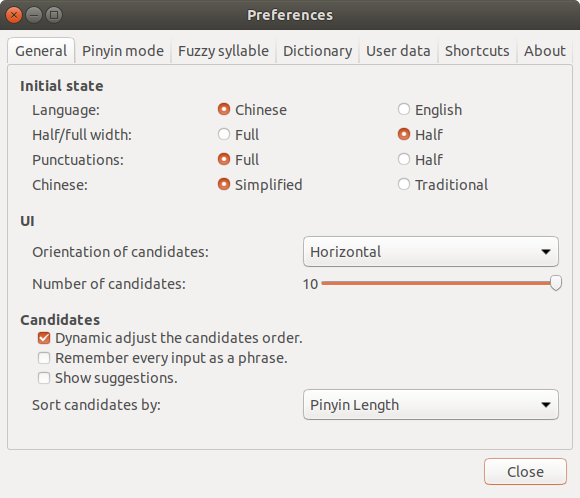
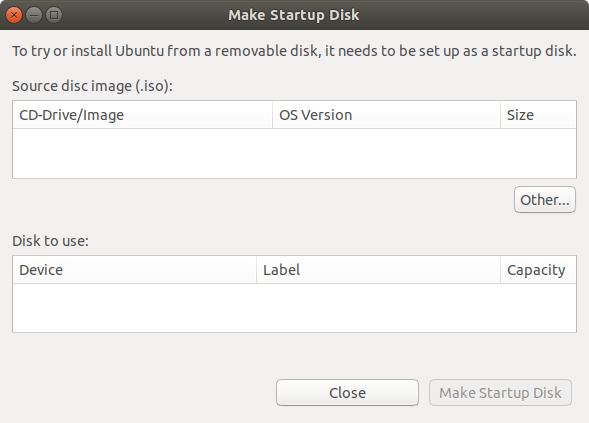
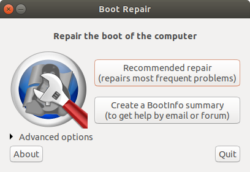

Some people have told me they don't think a fat penguin really embodies the grace of Linux, which just tells me they have never seen a angry penguin charging at them in excess of 100 mph.
—— Linus Torvalds
[*] Caution: This blog is written for Debian/Ubuntu, and it is not suit to other Linux distribution, such as Fedora/CentOS.
Basic Operation
Root & User
1 | sudo passwd root # new or modify password of root |
Shut Down & Restart
The following multiple lines of command is common to turn off computer.
1 | halt # shut down immediately |
The following multiple lines of command is common to restart computer.
1 | reboot # restart immediately |
Suspend & Hibernate
Suspend and sleep have the same meaning, which mean that turn off all peripherals and only keep cpu and memory running. And press Fn multiple times to exit the suspend state.
1 | sudo pm-suspend # valid |
Standby mode means that save state to memory and turn off other devices, especially it resumes slower than suspend but faster than hibernate.
1 | sudo pm-suspend-hybrid # valid |
Hibernate means that save state to disk and turn off all devices, which resumes slower than the above two states.1
2 sudo pm-hibernate # valid
sudo systemctl hibernate # invalid
Change Hostname
1 | su root |
File Management
1 | mkdir [Path] # new path |
Task Management
Manage task by using CLI.1
2
3
4
5 ps -A # list all process
... ...
kill -9 [PID] # kill process forcibly by PID
killall -9 [ProcessName] # kill process forcibly by name
... ...
Manage task by using GUI, if Gnome is exist.1
gnome-system-monitor # call Task Manager
Gnome Management
Press Alt + F2, then typing r could restart Gnome.
Package & Zip & Unzip
.tar
1 | tar xvf [FileName.tar] # untar |
.gz
1 | gunzip [FileName.gz] # unzip-1 |
.tar.gz & .tgz
1 | tar zxvf [FileName.tar.gz] # unzip |
.bz2
1 | bzip2 -d [FileName.bz2] # unzip-1 |
.tar.bz2
1 | tar jxvf [FileName.tar.bz2] # unzip |
.bz
1 | bzip2 -d [FileName.bz] # unzip-1 |
.tar.bz
1 | tar jxvf [FileName.tar.bz] # unzip |
.Z
1 | uncompress [FileName.Z] # unzip |
.tar.Z
1 | tar Zxvf [FileName.tar.Z] # unzip |
.zip
1 | unzip [FileName.zip] # unzip |
.rar
1 | rar x [FileName.rar] # unzip |
Swap Space
View Current Swap
1 | cat /proc/swaps |
New & Configure
1 | swapfile=/mnt/4GiB.swap |
View Again
1 | cat /proc/swaps |
Modify System Font
Install
Install font file, take consola as an example.
And download suitable font file from here to linux.
1 | unzip YaHei.Consolas.1.12.zip # unzip font file |
Activate
You should add it to the system font file and activate it, if you want to uing it for the system instead of one program.1
2
3
4 sudo mkdir /usr/share/fonts/consola/ # make folder for font file
sudo cp Fonts/consola.ttf /usr/share/fonts/consola/
cd /usr/share/fonts/consola/
sudo mkfontscale && sudo mkfontdir && sudo fc-cache -fv # activate font file
Input Method
IBus Pinyin & XIM Pinyin
[*] Prompt: As me, ibus-pinyin is more easy to use than google-pinyin.
- If language of os is English, it is necessary that install 'ibus-pinyin' or 'fcitx-pinyin'.
1 | sudo apt-get install ibus-pinyin |
Click
Setting->Region & Language->Manage Installed LanguagesSelect
Keyboard input method system=IBus->Install / Remove Languages...->Chinese(simplified)->ApplyReboot os.
1 | reboot |
Click
Setting->Region & Language->Input Sources->Chinese(Intelligent Pingyin)Configure sth such as switching mode in
Preferences.

Google Pinyin
Open input method configuration.
1
im-config
Select
OK->Yes->fcitx&OK->OK1
2
3sudo apt install fcitx-googlepinyin
reboot
fcitx-config-gtk3After adding Google Pinyin is ok.
Change Sources
Back Up older
1 | sudo cp /etc/apt/sources.list /etc/apt/sources.list.bak # back up old sources |
Edit Newer
1 | sudo vim /etc/apt/sources.list # edit new sources |
1 | # /etc/apt/sources.list |
Or like this.
1 | # /etc/apt/sources.list |
Update
1 | sudo apt-get update # update sources |
Package Manager - apt & snap
apt
Normally, the command apt = ( apt-get | apt-cache | apt-config ), although apt has new usage. In other words, you just need to use the command apt in most of the time when using Ubuntu OS.1
2
3
4
5
6
7
8
9
10 sudo apt install [SoftwarePackage] # install
sudo apt remove [SoftwarePackage] # remove
sudo apt remove --purge [SoftwarePackage] # remove package & configuration
sudo apt search [SoftwarePackage] # search
sudo apt list --installed # show packages that are installed
sudo apt list --upgradeable # show packages that are able to upgrade
sudo apt update # update
sudo apt upgrade # upgrade
sudo apt autoremove # remove some packages, which were used to as dependence of other packages formely but are not useful now
sudo apt autoclear # remove some old packages of installed software
snap
Accroding to my experience, the software packages will be managed by the manager - 'snap', if they are installed by the UGI Installer - 'Ubuntu Software', and you can find they in /home/user/snap. Actually, installing by the command snap directly is also able.1
2
3
4 sudo snap list
sudo snap find [SnapName]
sudo snap install [SnapName]
sudo snap remove [SnapName]
Solution about a Problem.
Unable to install "XXX" | error: snap "YYY" has "install-snap" change in progress1
2
3
4
5
6
7 snap changes
ID Status Spawn Ready Summary
... ... ...
13 Doing today at 20:55 CST today at 20:58 CST Install "YYY" snap
... ... ...
sudo snap abort 13
sudo snap install YYY
Update System
If your system is Ubunntu 16.04 LTS, and the machine hasn't powerful hardware resources, such RAM, I'll suggest update system to Ubuntu 18.04 LTS by conmand lines instead of re-installing.
Keep your Ubuntu-16.04LTS is newest.1
2
3 sudo apt-get update
sudo apt-get upgrade
sudo apt-get dist-upgrade
Start to update system, and make your selection carefully based on the following tips.1
sudo do-release-upgrade
Make Start Disk
GUI Way
A simple way is to using 'Startup Disk Creator' if you have it, or you could install it from 'Ubuntu Software'. And using CLI way is also valid.

CLI Way
Download system image that you need, such as Ubuntu 18.04.1 LTS DeskTop.1
2
3 cd ~/Downloads/
ls
ubuntu-18.04.1-desktop-amd64.iso
Show all the storage device and find your USB.1
2
3
4
5
6
7
8
9 sudo fdisk -l
... ...
Disk /dev/sdb: 7.5 GiB, 8011120640 bytes, 15646720 sectors
Units: sectors of 1 * 512 = 512 bytes
Sector size (logical/physical): 512 bytes / 512 bytes
I/O size (minimum/optimal): 512 bytes / 512 bytes
Disklabel type: dos
Disk identifier: 0xcad4ebea
... ...
Format USB and change form of it to FAT.1
2 sudo umount /dev/sdb*
sudo mkfs.vfat /dev/sdb -I
Make start USB.1
sudo dd if=~/Downloads/ubuntu-18.04.1-desktop-amd64.iso of=/dev/sdb
Boot Repair
Problem
GNU GRUB meet a problem so that cannot boot os normally, such as show the following code.
1 | error: incompatible license. |
Or like this.
1 | error: syntax error. |
Solution
Most of time, you need install and use a tool called 'boot-repair' without access to os (sometimes you are allowed to access). As me, a simple but useful way is to use usb that has been as a start disk.
Set BIOS and boot by usb.
Make sure the net connection is ok.
Copy and paste the following code to shell.
1 | sudo apt install software-properties-common; \ |
- Start to repair and wait a moment (if prompt appears, try do as what it show).

- Reboot by GNU GRUB2 instead of usb.
Reference
- GRUB error: syntax error. error: Incorrect command
- Install the Boot-Repair tool in an Ubuntu live disc
Broswer - Chromium
Download and install Chrome for 64-bit os.
1 | wget https://dl.google.com/linux/direct/google-chrome-stable_current_amd64.deb |
Add source of software and install Chromium for 64-bit os.1
2
3 sudo add-apt-repository ppa:chromium-daily
sudo apt-get update
sudo apt-get install chromium-browser
GUI SSR - electron-ssr
Download
Download the latest version .deb file from erguotou520/electron-ssr (another valid address). And you can learn more about the project by reading this blog.1
2
3 cd ~/Downloads
ls
electron-ssr-0.2.5.deb
Dependence
Associate local python package.1
2
3
4 su root
apt-get install --reinstall python
apt-get -f install
su user
Install necessary library - libappindicator1 & libsodium.1
2
3
4
5
6
7 sudo apt-get install libappindicator1 # maybe you need execute 'apt-get -f install' command by using root permission
sudo apt-get install build-essential
wget https://github.com/jedisct1/libsodium/releases/download/1.0.15/libsodium-1.0.15.tar.gz
tar xf libsodium-1.0.15.tar.gz
cd libsodium-1.0.15
./configure && make -j2 && make install
ldconfig
Install
Install electron-ssr.1
2
3 cd ~/Downloads
sudo dpkg -i electron-ssr-0.2.5.deb
export http_proxy="http://127.0.0.1:12333"
Configure
Paste subscription link if you have. And you also can add VPN node.
More Problem & Solution
Problem 1
Description
1 | E: Could not get lock /var/lib/dpkg/lock - open (11 Resource temporarily unavailable) |
1 | E: Could not ge lock /var/lib/apt/lists/lock - open (11: Resource temporarily |
Solution
1 | ps -aux | grep apt # show all the process and thread that called 'apt', or type `ps -aux | grep apt-get` |